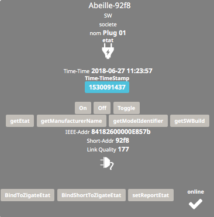

OSRAM¶
Prise Smart +¶
Les prises Inddor et Outdoor semble identique. Dans Abeille par defaut elle seront considérées indoor. Vous pouvez changer l icone si elle est OutDoor.
Nouvelle inclusion¶
Mettre la Zigate en mode inclusion (Bouton Inclusion), la Led bleue de la Zigate doit clignoter…
Appui long sur le bouton du flanc de la prise, la prise switche rapidement On/Off, lâcher le bouton, l’équipement doit se connecter et un objet doit apparaître dans Jeedom.

Inclue¶
Déjà inclue préalablement
un appui long (> 20s) sur le bouton latéral doit provoquer l’association (Zigate en mode inclusion) l’équipement doit se connecter et un objet doit apparaître dans Jeedom.
——————————————————- A clarifier
Retour d’état¶
Afin de configurer le retour d’état il faut avoir: - l’adresse IEEE sur l objet prise OSRAM - et sur l’objet ruche
Si ce n’est pas le cas vous pouvez faire un « liste Equipements » sur la ruche. Si cela ne suffit pas il faut faire « menu->Plugins->Protocol domotique->Abeille->Network List->Table de noeuds->Recalcul du cache » (Soyez patient).
Ensuite utilisez de préférence « BindShortToZigateEtat » puis « setReportEtat ». Maintenant un changement d’état doit remonter tout seul et mettre à jour l’icone.
Le retour d’état ne remonte que si l’état change. Donc si l’icone n’est pas synchro avec la prise vous pouvez avoir l’impression que cela ne fonctionne pas. Ex: la prise est Off et l’icone est on. Vous faites Off et rien ne se passe. Pour éviter cela un double Toggle doit réaligner tout le monde.
——————————————————- A clarifier
Remove¶
..image:: images/Capture_d_ecran_2019_07_06_a_10_43_00.png
Un remove exclue la prise OSRAM Outdoor du reseau avec un Leave (Rejoin: False, Request: False, Remove Children: False). Lors de l exclusion on entend la prise faire un aller-retour du relai. Et l’équipement dans Abeille est conservé mais désactivé. Vous pouvez garder l’équipement dans Abeille si vous le souhaitez ou le supprimer. Si vous le gardez, lors de la prochaine inclusion de cette même prise il sera ré-utilisé.
Ampoules¶
Ampoule E27 CLA 60 RGBW OSRAM (Classic E27 Multicolor)
Nouvelle inclusion¶
Mettre la Zigate en mode inclusion (Bouton Inclusion), la Led bleue de la Zigate doit clignoter…
Brancher l’ampoule OSRAM. Elle devrait joindre le réseau immédiatement et un objet doit être créé dans Jeedom.
Déjà inclue¶
Ampoule allumée. Éteindre/Allumer 5 fois toutes les 3 s et elle doit essayer de joindre le réseau et faire un flash.
Routage¶
Le routage avec les prise OSRAM ne semble pas compatible avec les autres produits comme xiaomi, ikea,… voir plus de détail dans le chapitre route et les aspects OSRAM.
Lightify Switch¶
Retrait de la languette pile en sortie de la boite avec zigate en mode inclusion. Rien passe sur la radio. Il a fallu plein de manip dont retirer la batterie pour avoir la led du milieu qui s allume en vert de temps a autre.
Reset: Bouton en haut a gauche et en bas a droite plus de 10 secondes.
Appairage: Bouton en haut a droite et bouton en bas à gauche pendant 3 secondes avec Zigate en mode inclusion. La Led au milieu semble passer au bleu pendant cette phase.
Proprietés: Cette telecommande broadcast et n’utilise pas les groupes. Toutes les ampoules dans le réseau vont utiliser les commandes ! Elle est visiblement configuratble avec la GW Osram mais je ne l’ai pas pour tester.
Motion Sensor¶
Reset: Bouton gauche 10 secondes d’apres la documentation mais personne ne touve que cela fonctionne.
Reveil: Appui sur le bouton lateral ou mouvement devant le capteur. Utile pour configurer le capteur depuis Abeille.
Appairage: Retrait et remise de la batterie alors que la zigate en mode inclusion et l appairage se produit. Mais quitte le reseau et entre en boucle appairage / leave !!! Pour l inclure j’ai mis la zigate en inclusion, arreté Abeille, appui 10s sur bouton, attendu 20 seconde et redemarrer Abeille puis ask name. Et la il ne quitte plus le reseau !!!! Il est compliqué a appairé.
Configuration: Il est fort probable que la configuration ne se realise pas correctement lors de l inclusion. Monsieur est recalcitrant. Dans ce cas, rendre visible la commande IEEE-Addr est vérifier qu’elle est bien reseignée. Rendre visible les commandes de Bind temperature, bind occupency, set report temperature, set report occupency, et les executer plusieurs fois tout en appuyant sur le bouton lateral. Une fois fait vous pouvez rendre invisible ces commandes.
Additional info: Clignote 3 fois bleu, appairage en cours / recherche de reseau. Pile: CR2